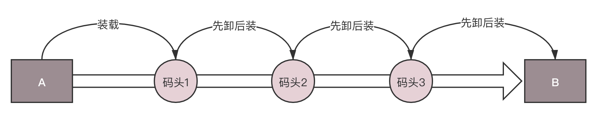

- 00 开篇词 想成为技术牛人？先搞定网络协议！.md
- 01 为什么要学习网络协议？.md
- 02 网络分层的真实含义是什么？.md
- 03 ifconfig：最熟悉又陌生的命令行.md
- 04 DHCP与PXE：IP是怎么来的，又是怎么没的？.md
- 05 从物理层到MAC层：如何在宿舍里自己组网玩联机游戏？.md
- 06 交换机与VLAN：办公室太复杂，我要回学校.md
- 07 ICMP与ping：投石问路的侦察兵.md
- 08 世界这么大，我想出网关：欧洲十国游与玄奘西行.md
- 09 路由协议：西出网关无故人，敢问路在何方.md
- 10 UDP协议：因性善而简单，难免碰到“城会玩”.md
- 11 TCP协议（上）：因性恶而复杂，先恶后善反轻松.md
- 12 TCP协议（下）：西行必定多妖孽，恒心智慧消磨难.md
- 13 套接字Socket：Talk is cheap, show me the code.md
- 14 HTTP协议：看个新闻原来这么麻烦.md
- 15 HTTPS协议：点外卖的过程原来这么复杂.md
- 16 流媒体协议：如何在直播里看到美女帅哥？.md
- 17 P2P协议：我下小电影，99%急死你.md
- 18 DNS协议：网络世界的地址簿.md
- 19 HttpDNS：网络世界的地址簿也会指错路.md
- 20 CDN：你去小卖部取过快递么？.md
- 21 数据中心：我是开发商，自己拿地盖别墅.md
- 22 VPN：朝中有人好做官.md
- 23 移动网络：去巴塞罗那，手机也上不了脸书.md
- 24 云中网络：自己拿地成本高，购买公寓更灵活.md
- 25 软件定义网络：共享基础设施的小区物业管理办法.md
- 26 云中的网络安全：虽然不是土豪，也需要基本安全和保障.md
- 27 云中的网络QoS：邻居疯狂下电影，我该怎么办？.md
- 28 云中网络的隔离GRE、VXLAN：虽然住一个小区，也要保护隐私.md
- 29 容器网络：来去自由的日子，不买公寓去合租.md
- 30 容器网络之Flannel：每人一亩三分地.md
- 31 容器网络之Calico：为高效说出善意的谎言.md
- 32 RPC协议综述：远在天边，近在眼前.md
- 33 基于XML的SOAP协议：不要说NBA，请说美国职业篮球联赛.md
- 34 基于JSON的RESTful接口协议：我不关心过程，请给我结果.md
- 35 二进制类RPC协议：还是叫NBA吧，总说全称多费劲.md
- 36 跨语言类RPC协议：交流之前，双方先来个专业术语表.md
- 37 知识串：用双十一的故事串起碎片的网络协议（上）.md
- 38 知识串：用双十一的故事串起碎片的网络协议（中）.md
- 39 知识串：用双十一的故事串起碎片的网络协议（下）.md
- 40 搭建一个网络实验环境：授人以鱼不如授人以渔.md
- 加餐1 创作故事：我是如何创作“趣谈网络协议”专栏的？.md
- 协议专栏特别福利 答疑解惑1期.md
- 协议专栏特别福利 答疑解惑2期.md
- 协议专栏特别福利 答疑解惑3期.md
- 协议专栏特别福利 答疑解惑4期.md
- 协议专栏特别福利 答疑解惑5期.md
- 结束语 放弃完美主义，执行力就是限时限量认真完成.md
29 容器网络：来去自由的日子，不买公寓去合租
如果说虚拟机是买公寓，容器则相当于合租，有一定的隔离，但是隔离性没有那么好。云计算解决了基础资源层的弹性伸缩，却没有解决PaaS层应用随基础资源层弹性伸缩而带来的批量、快速部署问题。于是，容器应运而生。
容器就是Container，而Container的另一个意思是集装箱。其实容器的思想就是要变成软件交付的集装箱。集装箱的特点，一是打包，二是标准。

在没有集装箱的时代，假设要将货物从A运到B，中间要经过三个码头、换三次船。每次都要将货物卸下船来，弄得乱七八糟，然后还要再搬上船重新整齐摆好。因此在没有集装箱的时候，每次换船，船员们都要在岸上待几天才能干完活。
有了尺寸全部都一样的集装箱以后，可以把所有的货物都打包在一起，所以每次换船的时候，一个箱子整体搬过去就行了，小时级别就能完成，船员再也不用耗费很长时间了。这是集装箱的“打包”“标准”两大特点在生活中的应用。
那么容器如何对应用打包呢？
学习集装箱，首先要有个封闭的环境，将货物封装起来，让货物之间互不干扰，互相隔离，这样装货卸货才方便。
封闭的环境主要使用了两种技术，一种是看起来是隔离的技术，称为namespace，也即每个 namespace中的应用看到的是不同的 IP地址、用户空间、程号等。另一种是用起来是隔离的技术，称为cgroup，也即明明整台机器有很多的 CPU、内存，而一个应用只能用其中的一部分。
有了这两项技术，就相当于我们焊好了集装箱。接下来的问题就是如何“将这个集装箱标准化”，并在哪艘船上都能运输。这里的标准首先就是镜像。
所谓镜像，就是将你焊好集装箱的那一刻，将集装箱的状态保存下来，就像孙悟空说：“定！”，集装箱里的状态就被定在了那一刻，然后将这一刻的状态保存成一系列文件。无论从哪里运行这个镜像，都能完整地还原当时的情况。

接下来我们就具体来看看，这两种网络方面的打包技术。
命名空间（namespace）
我们首先来看网络namespace。
namespace翻译过来就是命名空间。其实很多面向对象的程序设计语言里面，都有命名空间这个东西。大家一起写代码，难免会起相同的名词，编译就会冲突。而每个功能都有自己的命名空间，在不同的空间里面，类名相同，不会冲突。
在Linux下也是这样的，很多的资源都是全局的。比如进程有全局的进程ID，网络也有全局的路由表。但是，当一台Linux上跑多个进程的时候，如果我们觉得使用不同的路由策略，这些进程可能会冲突，那就需要将这个进程放在一个独立的namespace里面，这样就可以独立配置网络了。
网络的namespace由ip netns命令操作。它可以创建、删除、查询namespace。
我们再来看将你们宿舍放进一台物理机的那个图。你们宿舍长的电脑是一台路由器，你现在应该知道怎么实现这个路由器吧？可以创建一个Router虚拟机来做这件事情，但是还有一个更加简单的办法，就是我在图里画的这条虚线，这个就是通过namespace实现的。

我们创建一个routerns，于是一个独立的网络空间就产生了。你可以在里面尽情设置自己的规则。
ip netns add routerns
既然是路由器，肯定要能转发嘛，因而forward开关要打开。
ip netns exec routerns sysctl -w net.ipv4.ip_forward=1
exec的意思就是进入这个网络空间做点事情。初始化一下iptables，因为这里面要配置NAT规则。
ip netns exec routerns iptables-save -c
ip netns exec routerns iptables-restore -c
路由器需要有一张网卡连到br0上，因而要创建一个网卡。
ovs-vsctl -- add-port br0 taprouter -- set Interface taprouter type=internal -- set Interface taprouter external-ids:iface-status=active -- set Interface taprouter external-ids:attached-mac=fa:16:3e:84:6e:cc
这个网络创建完了，但是是在namespace外面的，如何进去呢？可以通过这个命令：
ip link set taprouter netns routerns
要给这个网卡配置一个IP地址，当然应该是虚拟机网络的网关地址。例如虚拟机私网网段为192.168.1.0/24，网关的地址往往为192.168.1.1。
ip netns exec routerns ip -4 addr add 192.168.1.1/24 brd 192.168.1.255 scope global dev taprouter
为了访问外网，还需要另一个网卡连在外网网桥br-ex上，并且塞在namespace里面。
ovs-vsctl -- add-port br-ex taprouterex -- set Interface taprouterex type=internal -- set Interface taprouterex external-ids:iface-status=active -- set Interface taprouterex external-ids:attached-mac=fa:16:3e:68:12:c0
ip link set taprouterex netns routerns
我们还需要为这个网卡分配一个地址，这个地址应该和物理外网网络在一个网段。假设物理外网为16.158.1.0/24，可以分配一个外网地址16.158.1.100/24。
ip netns exec routerns ip -4 addr add 16.158.1.100/24 brd 16.158.1.255 scope global dev taprouterex
接下来，既然是路由器，就需要配置路由表，路由表是这样的：
ip netns exec routerns route -n
Kernel IP routing table
Destination Gateway Genmask Flags Metric Ref Use Iface
0.0.0.0 16.158.1.1 0.0.0.0 UG 0 0 0 taprouterex
192.168.1.0 0.0.0.0 255.255.255.0 U 0 0 0 taprouter
16.158.1.0 0.0.0.0 255.255.255.0 U 0 0 0 taprouterex
路由表中的默认路由是去物理外网的，去192.168.1.0/24也即虚拟机私网，走下面的网卡，去16.158.1.0/24也即物理外网，走上面的网卡。
我们在前面的章节讲过，如果要在虚拟机里面提供服务，提供给外网的客户端访问，客户端需要访问外网IP3，会在外网网口NAT称为虚拟机私网IP。这个NAT规则要在这个namespace里面配置。
ip netns exec routerns iptables -t nat -nvL
Chain PREROUTING
target prot opt in out source destination
DNAT all -- * * 0.0.0.0/0 16.158.1.103 to:192.168.1.3
Chain POSTROUTING
target prot opt in out source destination
SNAT all -- * * 192.168.1.3 0.0.0.0/0 to:16.158.1.103
这里面有两个规则，一个是SNAT，将虚拟机的私网IP 192.168.1.3 NAT成物理外网IP 16.158.1.103。一个是DNAT，将物理外网IP 16.158.1.103 NAT成虚拟机私网IP 192.168.1.3。
至此为止，基于网络namespace的路由器实现完毕。
机制网络（cgroup）
我们再来看打包的另一个机制网络cgroup。
cgroup全称control groups，是Linux内核提供的一种可以限制、隔离进程使用的资源机制。
cgroup能控制哪些资源呢？它有很多子系统：
-
CPU子系统使用调度程序为进程控制CPU的访问；
-
cpuset，如果是多核心的CPU，这个子系统会为进程分配单独的CPU和内存；
-
memory子系统，设置进程的内存限制以及产生内存资源报告；
-
blkio子系统，设置限制每个块设备的输入输出控制；
-
net_cls，这个子系统使用等级识别符（classid）标记网络数据包，可允许Linux 流量控制程序（tc）识别从具体cgroup中生成的数据包。
我们这里最关心的是net_cls，它可以和前面讲过的TC关联起来。
cgroup提供了一个虚拟文件系统，作为进行分组管理和各子系统设置的用户接口。要使用cgroup，必须挂载cgroup文件系统，一般情况下都是挂载到/sys/fs/cgroup目录下。
所以首先我们要挂载一个net_cls的文件系统。
mkdir /sys/fs/cgroup/net_cls
mount -t cgroup -onet_cls net_cls /sys/fs/cgroup/net_cls
接下来我们要配置TC了。还记得咱们实验TC的时候那颗树吗？
当时我们通过这个命令设定了规则：从1.2.3.4来的，发送给port 80的包，从1:10走；其他从1.2.3.4发送来的包从1:11走；其他的走默认。
tc filter add dev eth0 protocol ip parent 1:0 prio 1 u32 match ip src 1.2.3.4 match ip dport 80 0xffff flowid 1:10
tc filter add dev eth0 protocol ip parent 1:0 prio 1 u32 match ip src 1.2.3.4 flowid 1:11
这里是根据源IP来设定的，现在有了cgroup，我们按照cgroup再来设定规则。
tc filter add dev eth0 protocol ip parent 1:0 prio 1 handle 1: cgroup
假设我们有两个用户a和b，要对它们进行带宽限制。
首先，我们要创建两个net_cls。
mkdir /sys/fs/cgroup/net_cls/a
mkdir /sys/fs/cgroup/net_cls/b
假设用户a启动的进程ID为12345，把它放在net_cls/a/tasks文件中。同样假设用户b启动的进程ID为12346，把它放在net_cls/b/tasks文件中。
net_cls/a目录下面，还有一个文件net_cls.classid，我们放flowid 1:10。net_cls/b目录下面，也创建一个文件net_cls.classid，我们放flowid 1:11。
这个数字怎么放呢？要转换成一个0xAAAABBBB的值，AAAA对应class中冒号前面的数字，而BBBB对应后面的数字。
echo 0x00010010 > /sys/fs/cgroup/net_cls/a/net_cls.classid
echo 0x00010011 > /sys/fs/cgroup/net_cls/b/net_cls.classid
这样用户a的进程发的包，会打上1:10这个标签；用户b的进程发的包，会打上1:11这个标签。然后TC根据这两个标签，让用户a的进程的包走左边的分支，用户b的进程的包走右边的分支。
容器网络中如何融入物理网络？
了解了容器背后的技术，接下来我们来看，容器网络究竟是如何融入物理网络的？
如果你使用docker run运行一个容器，你应该能看到这样一个拓扑结构。

是不是和虚拟机很像？容器里面有张网卡，容器外有张网卡，容器外的网卡连到docker0网桥，通过这个网桥，容器直接实现相互访问。
如果你用brctl查看docker0网桥，你会发现它上面连着一些网卡。其实这个网桥和[第24讲]，咱们自己用brctl创建的网桥没什么两样。
那连接容器和网桥的那个网卡和虚拟机一样吗？在虚拟机场景下，有一个虚拟化软件，通过TUN/TAP设备虚拟一个网卡给虚拟机，但是容器场景下并没有虚拟化软件，这该怎么办呢？
在Linux下，可以创建一对veth pair的网卡，从一边发送包，另一边就能收到。
我们首先通过这个命令创建这么一对。
ip link add name veth1 mtu 1500 type veth peer name veth2 mtu 1500
其中一边可以打到docker0网桥上。
ip link set veth1 master testbr
ip link set veth1 up
那另一端如何放到容器里呢？
一个容器的启动会对应一个namespace，我们要先找到这个namespace。对于docker来讲，pid就是namespace的名字，可以通过这个命令获取。
docker inspect '--format={{ .State.Pid }}' test
假设结果为12065，这个就是namespace名字。
默认Docker创建的网络namespace不在默认路径下 ，ip netns看不到，所以需要ln软链接一下。链接完毕以后，我们就可以通过ip netns命令操作了。
rm -f /var/run/netns/12065
ln -s /proc/12065/ns/net /var/run/netns/12065
然后，我们就可以将另一端veth2塞到namespace里面。
ip link set veth2 netns 12065
然后，将容器内的网卡重命名。
ip netns exec 12065 ip link set veth2 name eth0
然后，给容器内网卡设置ip地址。
ip netns exec 12065 ip addr add 172.17.0.2/16 dev eth0
ip netns exec 12065 ip link set eth0 up
一台机器内部容器的互相访问没有问题了，那如何访问外网呢？
你先想想看有没有思路？对，就是虚拟机里面的桥接模式和NAT模式。Docker默认使用NAT模式。NAT模式分为SNAT和DNAT，如果是容器内部访问外部，就需要通过SNAT。
从容器内部的客户端访问外部网络中的服务器，我画了一张图。在[虚拟机]那一节，也有一张类似的图。

在宿主机上，有这么一条iptables规则：
-A POSTROUTING -s 172.17.0.0/16 ! -o docker0 -j MASQUERADE
所有从容器内部发出来的包，都要做地址伪装，将源IP地址，转换为物理网卡的IP地址。如果有多个容器，所有的容器共享一个外网的IP地址，但是在conntrack表中，记录下这个出去的连接。
当服务器返回结果的时候，到达物理机，会根据conntrack表中的规则，取出原来的私网IP，通过DNAT将地址转换为私网IP地址，通过网桥docker0实现对内的访问。
如果在容器内部属于一个服务，例如部署一个网站，提供给外部进行访问，需要通过Docker的端口映射技术，将容器内部的端口映射到物理机上来。
例如容器内部监听80端口，可以通Docker run命令中的参数-p 10080:80，将物理机上的10080端口和容器的80端口映射起来， 当外部的客户端访问这个网站的时候，通过访问物理机的10080端口，就能访问到容器内的80端口了。

Docker有两种方式，一种是通过一个进程docker-proxy的方式，监听10080，转换为80端口。
/usr/bin/docker-proxy -proto tcp -host-ip 0.0.0.0 -host-port 10080 -container-ip 172.17.0.2 -container-port 80
另外一种方式是通过DNAT方式，在-A PREROUTING阶段加一个规则，将到端口10080的DNAT称为容器的私有网络。
-A DOCKER -p tcp -m tcp --dport 10080 -j DNAT --to-destination 172.17.0.2:80
如此就可以实现容器和物理网络之间的互通了。
小结
好了，这一节就到这里了，我们来总结一下。
-
容器是一种比虚拟机更加轻量级的隔离方式，主要通过namespace和cgroup技术进行资源的隔离，namespace用于负责看起来隔离，cgroup用于负责用起来隔离。
-
容器网络连接到物理网络的方式和虚拟机很像，通过桥接的方式实现一台物理机上的容器进行相互访问，如果要访问外网，最简单的方式还是通过NAT。
最后，给你留两个思考题：
-
容器内的网络和物理机网络可以使用NAT的方式相互访问，如果这种方式用于部署应用，有什么问题呢？
-
和虚拟机一样，不同物理机上的容器需要相互通信，你知道容器是怎么做到这一点吗？
我们的专栏更新到第29讲，不知你掌握得如何？每节课后我留的思考题，你都有没有认真思考，并在留言区写下答案呢？我会从已发布的文章中选出一批认真留言的同学，赠送学习奖励礼券和我整理的独家网络协议知识图谱。
欢迎你留言和我讨论。趣谈网络协议，我们下期见！
© 2019 - 2023 Liangliang Lee. Powered by Vert.x and hexo-theme-book.